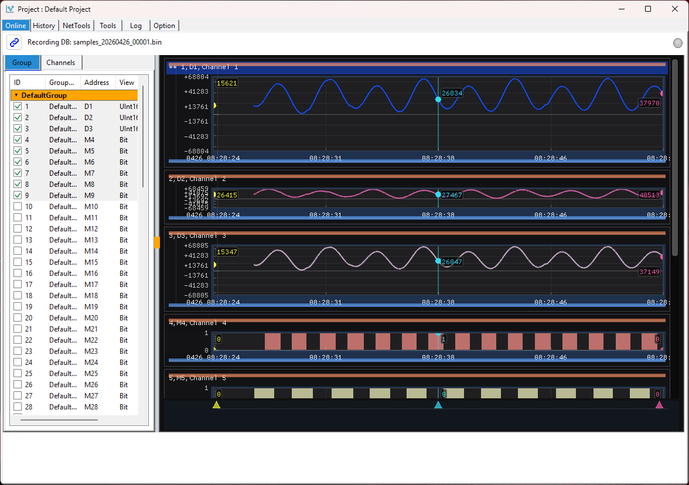
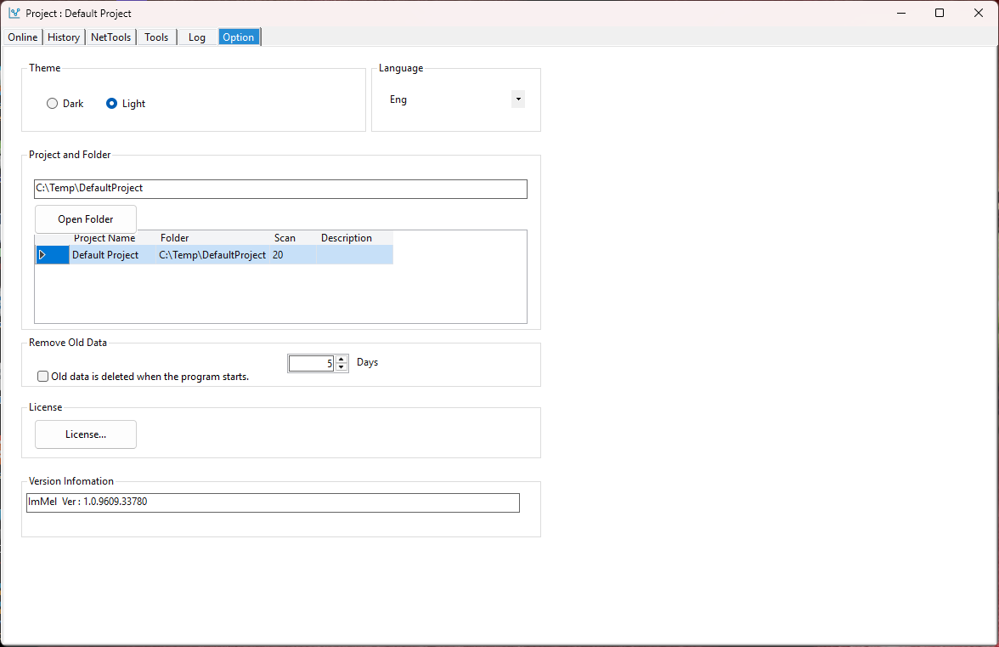

ImMel


Overview
ImMel is a monitoring tool for Melsec PLCs developed by ImagineTech. It provides real-time monitoring and visualization of PLC data, allowing users to easily track the status and performance of their PLC systems. With ImMel, users can quickly identify issues and optimize their PLC operations for improved efficiency and reliability.
Key features of ImMel include:
- - Free use without a license for every hour
- - Ethernet MC 3E Protocol Based
- - Fast plot control engine in C++
- - Historical data logging and analysis
- - Save up to 90 channels
- - Chart projects managed by folders
- - Less data space because it is stored in binary format.
ImMel_Ver 1.0.9740.28741 Install Program Download
ImMel_Melsec_PLC_Chart_Operation_Manual.pdf (Kor)
ImMel : Melsec PLC Monitoring tool.